nlp-beginner实现日志
这是复旦大学nlp-beginner项目的实现日志
Lab 1
test accuracy here actually means validation accuracy
An MLP for text classification implementation from scratch only by NumPy is required in Lab 1
training plot:
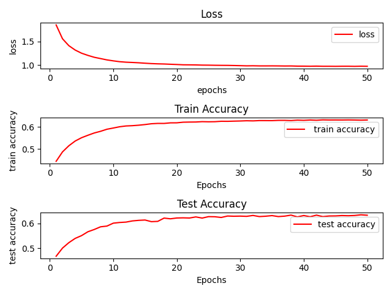
The accuracy on the corresponding Kaggle comepetition is bad, just 19%
Lab 2
A Pytorch version of Lab 1 with CNN and RNN classifier is required in Lab 2, whose initialization shall be random or by pre-trained GLoVe vectors. Here are some results
test accuracy here actually means validation accuracy
epoch for all experiments is 50
CNN train plot
- TextCNN(paper) with GLoVe 50d
learning rate 0.001
dropout 0.5
batch size 128
weight decay 0.001
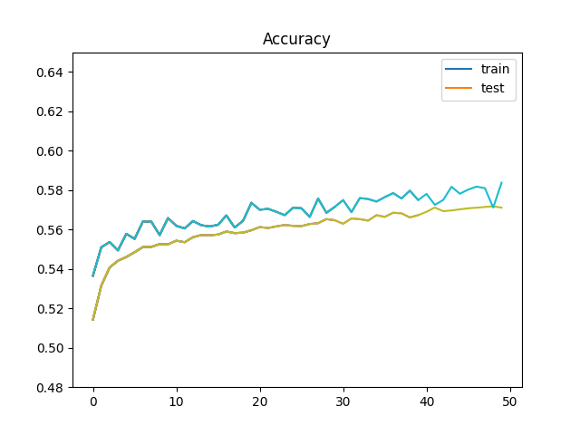
RNN training plots
- GRU with GLoVe 50d
learning rate 0.001
batch size 64
weight decay 1e-5
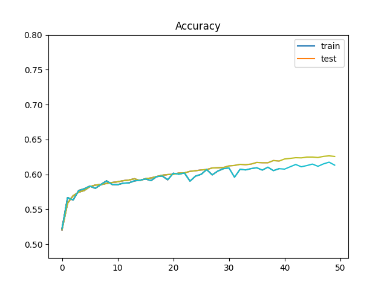
The best performance on the same competition in Lab 1 reached 60.3%
- LSTM with GLoVe 100d
learning rate 0.001
batch size 64
weight decay 1e-5
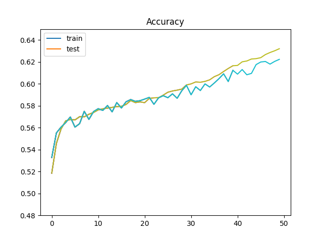
but the best performance is 59.2%, a little bit worse than GRU
Further experiments are needed to find out whether this is because of the change of NN structur or the dimension of word vector
- GRU with GLoVe 100d
learning rate 0.001
batch size 64
weight decay 1e-5
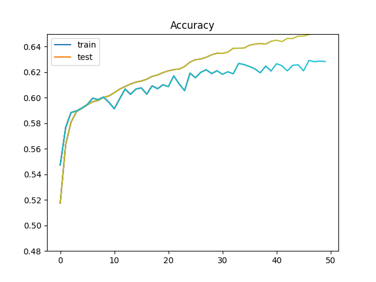
The best performance on the same competition in Lab 1 reached 61.3%
By comparing experiment 2 and 3, it can be concluded that it is the structure of the network that influences the result.
A possible reason for this is the parameters in the hidden layer of LSTM(a tuple of 2 tensors) is more than that in GRU(1 tensor). So it is prone to overfit.
- Bi-GRU with GLoVe 100d
learning rate 0.001
batch size 64
weight decay 1e-4
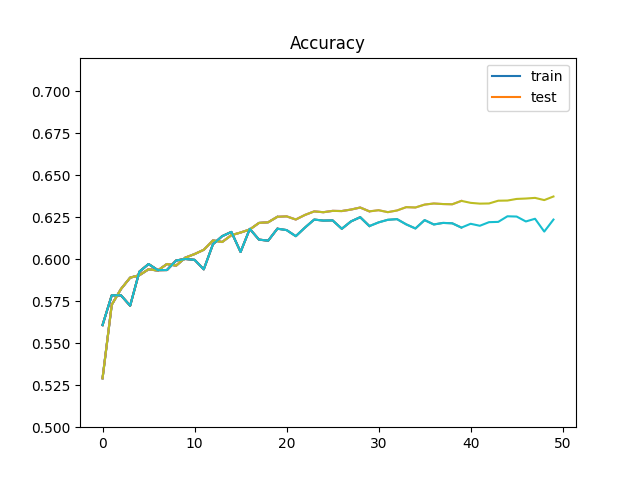
The best performance on the same competition in Lab 1 is 60.7%
I do not know why Bi-GRU or Bi-LSTM won't improve performance. Maybe there is better hyper-parameter combinations.
Besides I also tried gradient clipping but it will do bad to this lab because the amount of training data is not large(at 10^5 level). Gradient boom won't appear.
This is the end of lab 1 & 2
Lab 3
This is an implementation of the ESIM model of this paper
Hyper parameters:
1 | batch_size = 256 |
I trained the model 30 epochs using SNLI dataset. But when tested, it seems 10 epochs is enough, more epochs could cause overfit.
The loss curve:
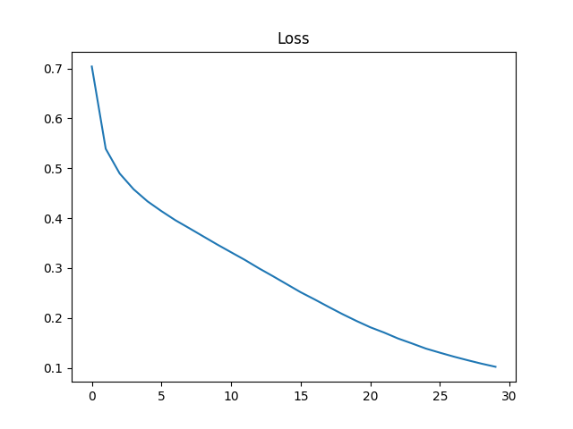
The accuracy & loss curve:
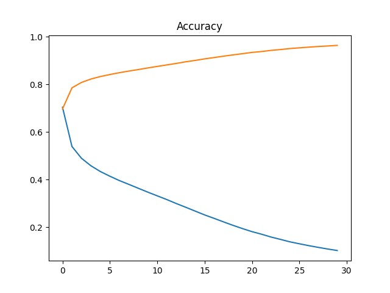
| Epoch | Acc |
|---|---|
| 0(Randomly initialized) | 32.88 % |
| 10 | 85.50 % |
| 20 | 83.69 % |
| 30 | 83.16 % |
Customized test is available in prediction.py, You can
play with this.
Concatenating information produced by LSTM is useful. Attention is strong
This is the end of lab 3
Lab 4
A note for viterbi algorithm in CRF
Viterbi algorithm[1]
This is actually an abstract method for all "shortest"-path problems of layered & structured graph.
The algorithm uses DP to find the 'shortest' path from the start to the end.
consider this graph:
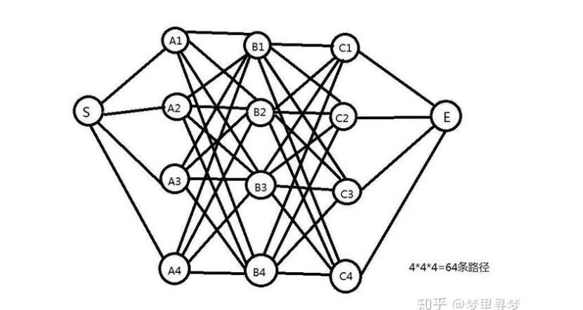
If we want to get the shortest path length from S to E, we need to:
calculate all the distances from S to layer A
calculate and reserve the shortest paths and their start points(the precedent array) from layer A to layer B (i.e A->B{1,2,3,4}) Just 4 paths reserved, which accelerates the algorithm compared with brute-force
repeat the step from layer B to C
choose the shortest path from layer C to E
backtrack according to the precedent array to S, record every point
the reversion of the record in the previous step is the shortest path from S to E
These are basic steps of viterbi algorithm
All models using this algorithm just differs on the definition of path length
- CRF & others[2] [3]
Essentially, the layers in part 1 are instantialized as all the possible states in HMM, Structured Perceptron and CRF as shown below:
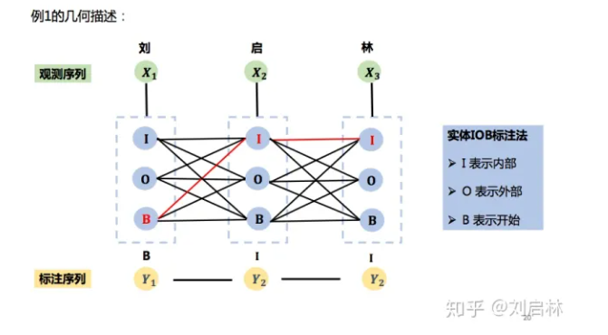
We just need to calculate the maximum path length of the graph with a customized score function
- Viterbi algorithm in CRF[2]
[1] https://zhuanlan.zhihu.com/p/40208596
[2] Introduction to Natrual Language Processing, Chapters 5 and 6, Han He, 2019
[3] https://zhuanlan.zhihu.com/p/148813079
Lab 5
花丛狭路尘 间黯将暮云 间月色明如 素鸳鸯池上 两两飞凤凰 楼下双双度 物色正如此 佳期那不顾
明月夜玉殿莓苔 青宫女晚知曙祠 官朝见星空梁簇 画戟阴井敲铜瓶 中使日夜继惟王 心不宁岂徒恤备 享尚谓求无形孝 理敦国政神凝推
hyper-parameters
batch_size = 64
num_steps = 10 or 14
embedding_size = 100
hidden_size = 256
lr = 0.001
There are poems generated by the GRU model. Somehow nonsense.(Copying the dataset)
I tried the time steps of 10(for 5-charactered-sentence poem) and 14(for 7-charactered-sentence poem)
The perplexity of time step 10:
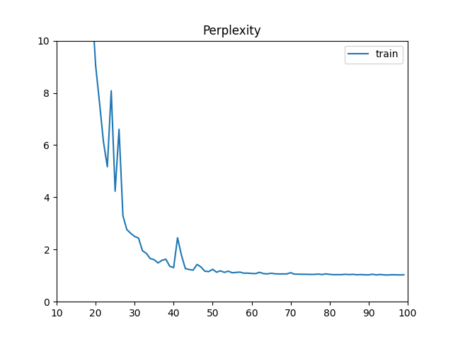
The perplexity of time step 14:
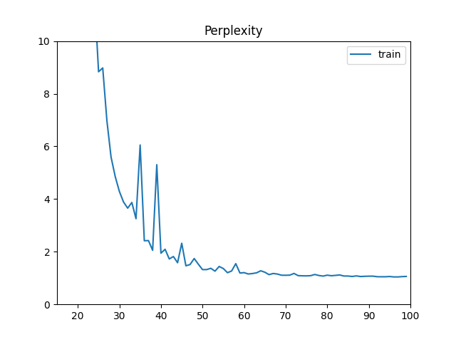
I think it is better to use seq2seq. I will try if time allows.
This is the end of lab 5